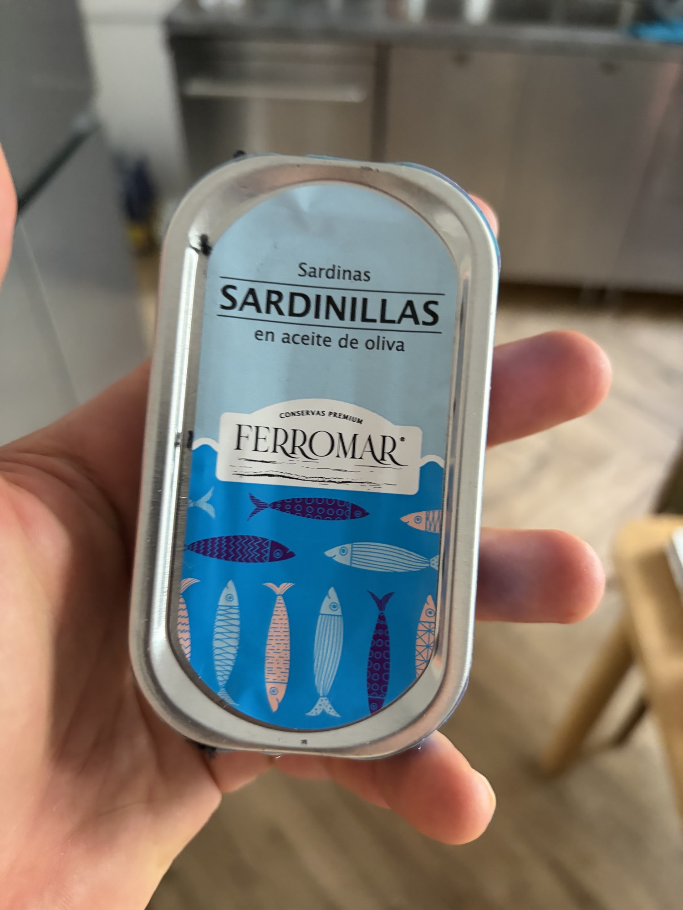
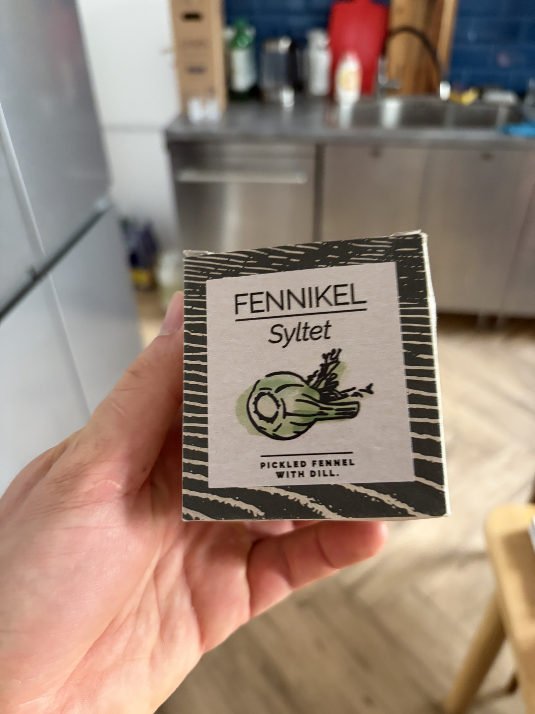
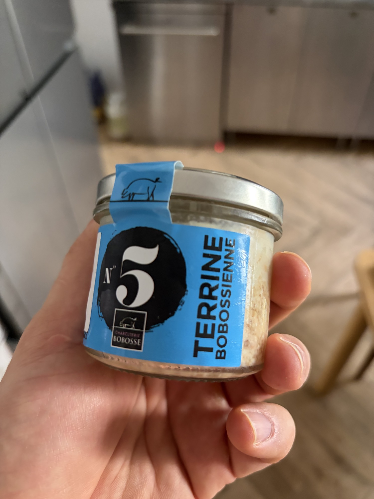
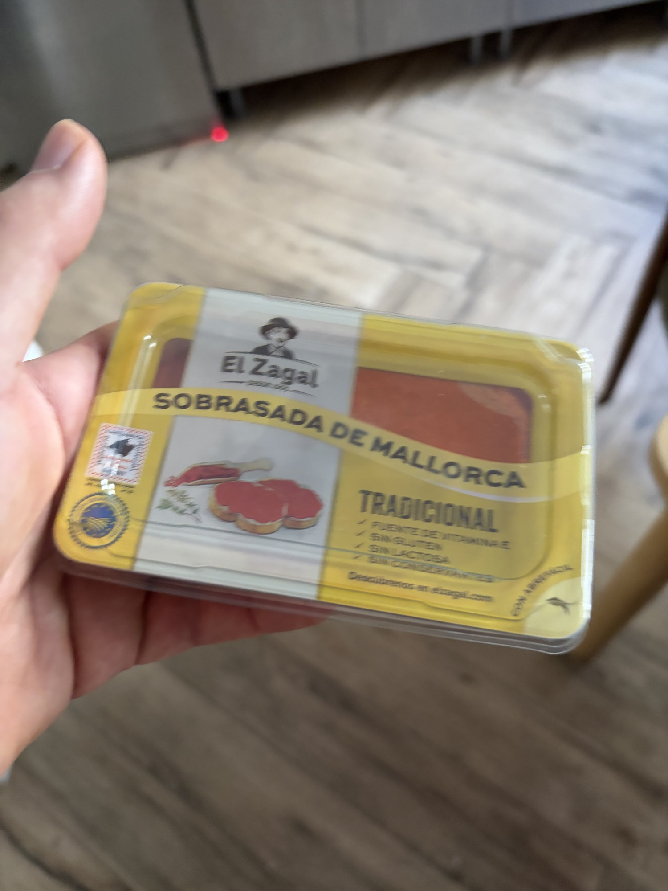
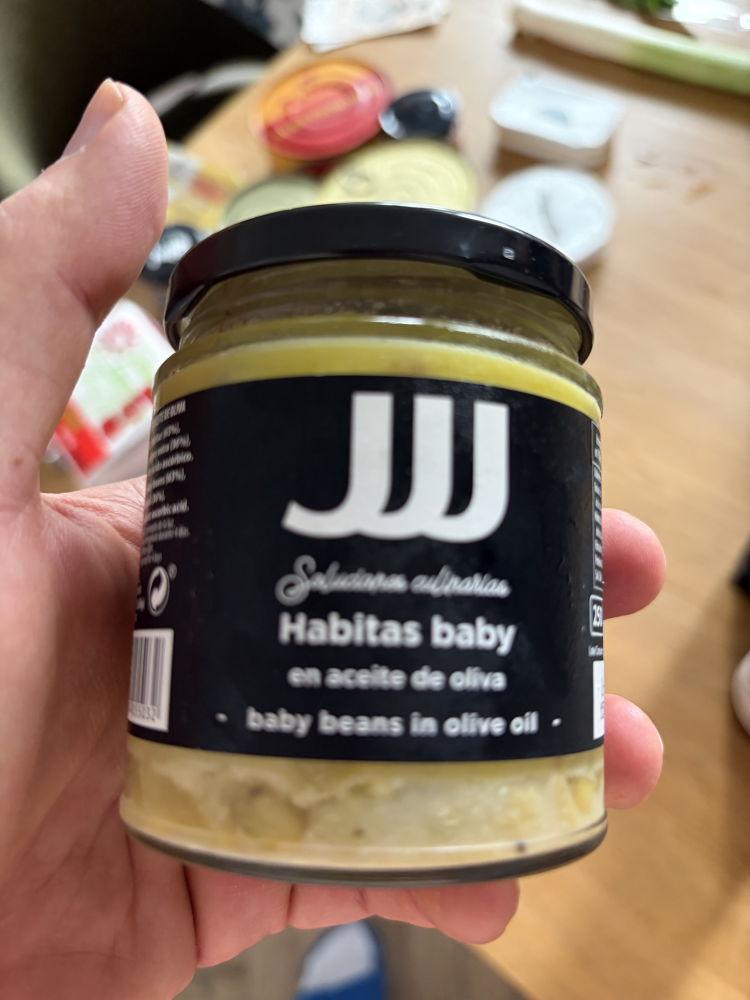
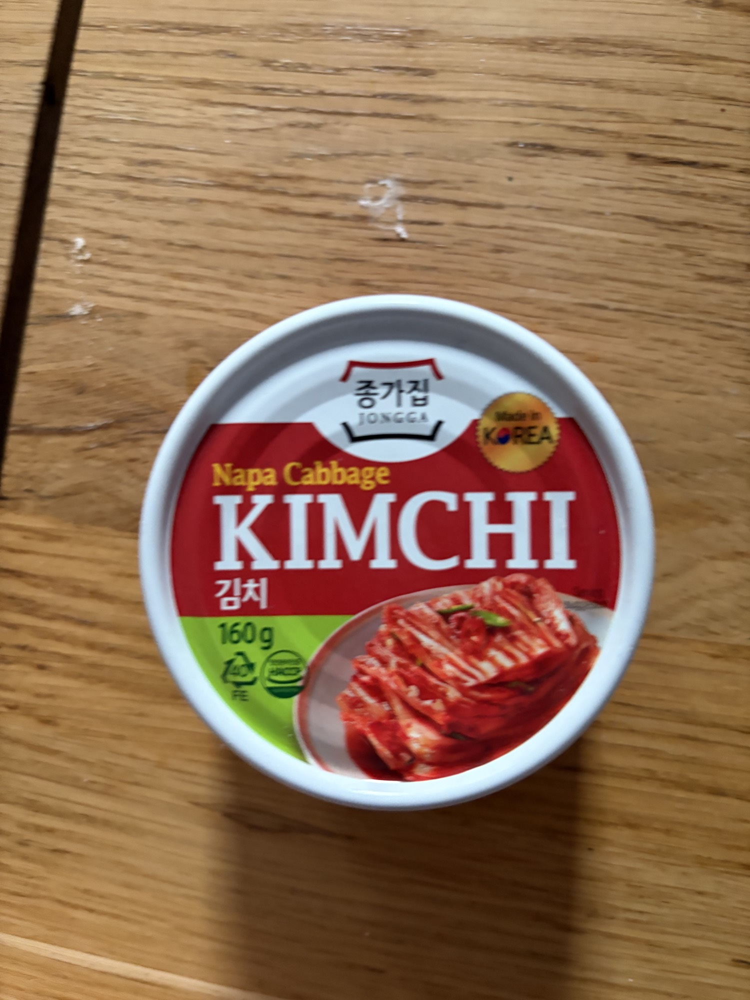

EN
RU
Кладовая частного шефа
Кураторская коллекция премиальных консервов и деликатесов
Кладовая
Испанские консервы и премиум морепродукты
Herpac — филе голубого тунца
Атлантический голубой тунец, пойманный способом альмадраба, филе в оливковом масле Arbequina EVOO из Барбате, Кадис.
Herpac — икра макрели
Икра атлантической скумбрии в оливковом масле. Солёная, кремовая, нежная.
Икра морского ежа
Галисийские гонады морского ежа — несколько брендов: La Brújula Nº91, Ramón Peña 1920, Rosa Lafuente, Los Peperetes, Porto-Muiños.
Ramón Peña — фаршированные кальмарчики
Chipirones rellenos в собственных чернилах. Классическая галисийская консерва.
Морские черенки / Navajas в рассоле
Галисийские морские черенки в чистом рассоле. Несколько брендов, включая Selección 1920.
Мидии
Mytilus galloprovincialis + Porto-Muiños Mejillón al Natural con Tronco de Wakame.
Устрицы в соусе винегрет из Альбариньо
Крупные галисийские устрицы в соусе на основе вина Альбариньо. Готовый к подаче деликатес.
Sotavento — крем из осьминога
Crema de Pulpo — нежный, намазываемый паштет из осьминога из Испании.
Мясо паука-краба
Carne de Centollo al Natural от La Mar de Tazones, Астурия.
Мясо снежного краба
Cangrejo de las Nieves al Natural — несколько премиальных испанских брендов.
Мясо ног камчатского краба
Chatka Patas 100% — мясо ног камчатского краба в рассоле.

Ferromar — мелкие сардинки
Sardinillas en Aceite de Oliva — мелкие сардины в премиальном оливковом масле.
Мальки угря (Angulas)
Conservas de Cambados angulas в оливковом масле с перцем гиндилья.
El Capricho Santoña — осётр
Награждённый консервированный осётр в оливковом масле из Сантоньи.
Agromar — паштет из лобстера
Paté de Bogavante — роскошные рийеты из лобстера в оливковом масле.
La Venta — крем из бархатного краба
Crema de Nécoras (1897) — крем из бархатного плавающего краба из Кантабрии.
Скандинавские деликатесы
Fangst — сердцевидки Лимфьорда
Датские сердцевидки из Лимфьорда, слегка подсоленные. Сладко-солёное совершенство.
Fangst — печень исландского морского чёрта
Havtaske Lever — слегка копчёная печень исландского морского чёрта. «Фуа-гра моря».
Fangst — печень исландской трески
Torske Lever — слегка копчёная печень исландской трески в собственном масле.
Röda Ulven Surströmming
Знаменитая шведская квашеная балтийская селёдка — самый ароматный деликатес в мире.

Маринованный фенхель с укропом
Fennikel Syltet — фенхель скандинавского засола с укропом.
Польские / Восточноевропейские
Łosoś Ustka — сом в соусе барбекю
Польский сом (sum) в соусе барбекю. Готовая к употреблению рыбная консерва.
Kiszone Śledzie Łódzkie
Польская маринованная/квашеная сельдь, по-лодзински.
Riga Gold — печень трески
Wątróbki z dorsza w tłuszczu własnym — печень трески в собственном жире. Латвийский бренд, исландское производство.
Французские продукты
Jean de Luz — баскский тунец
Thon Basquaise aux Légumes Bio — альбакор с органическими овощами и перцем Эспелет.
Jean de Luz — филе морского чёрта
Filet de Lotte au Naturel — морской чёрт в слегка подсоленной родниковой воде.
Maison Rivière — свинина с рататуем
Sauté de porc et sa ratatouille — классическое французское тушёное блюдо в банке.

Charcuterie Bobosse — свиной террин
Terrine Bobossienne N°5 — ремесленный французский свиной террин.
Паштет из свиной печени с солью Геранд
Pasztet z wątróbki z solą z Guérande — франко-польский паштет из свиной печени.
Мясные деликатесы, соусы, соленья и прочее

El Zagal Sobrasada de Mallorca
Традиционная мальоркинская собрасада — мягкая, намазываемая вяленая свинина с паприкой.

Молодые бобы в оливковом масле
Habitas baby en aceite de oliva — нежные испанские бобы, идеальные как тапас.
Варенье из красной смородины
Konfitura z czerwonych porzeczek — ручная работа, польское фруктовое варенье.
Домашний соус чимичурри
Аргентинский чимичурри — петрушка, чили, чеснок, орегано, оливковое масло, винный уксус.
Shan — тамариндовый чатни
Пакистанский/индийский сладко-кислый тамариндовый чатни. Острая приправа.
Shan — пикули из манго и карелы
Пакистанские/индийские пикули из манго и горькой тыквы (карелы) в пряном масле.

Jongga — кимчи из пекинской капусты
Классическое корейское кимчи из пекинской капусты. Острое, ферментированное, богатое умами.